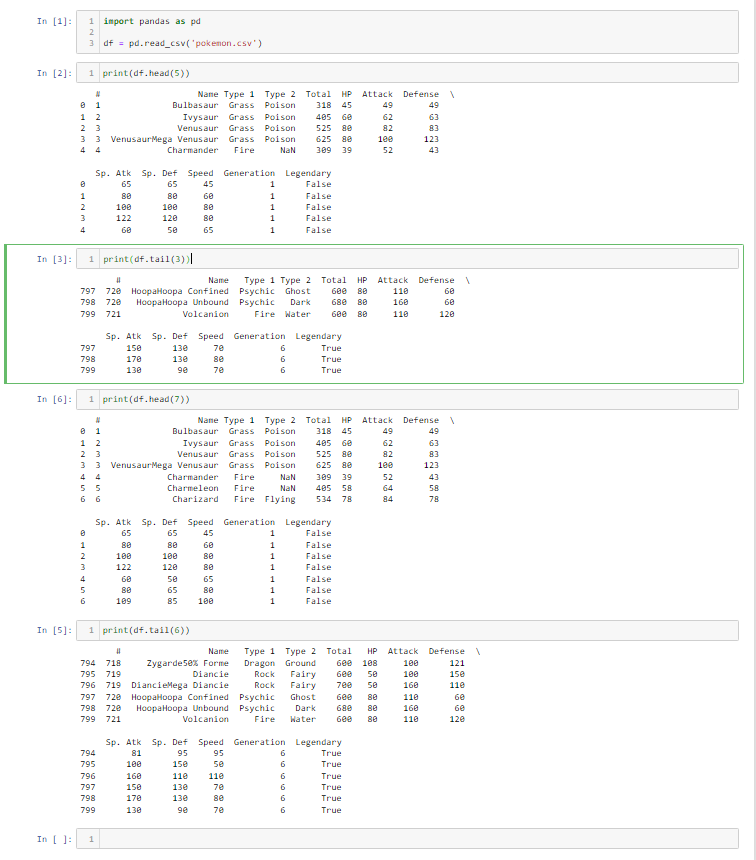
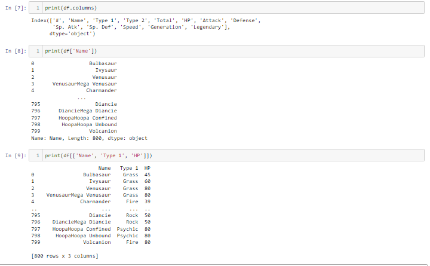
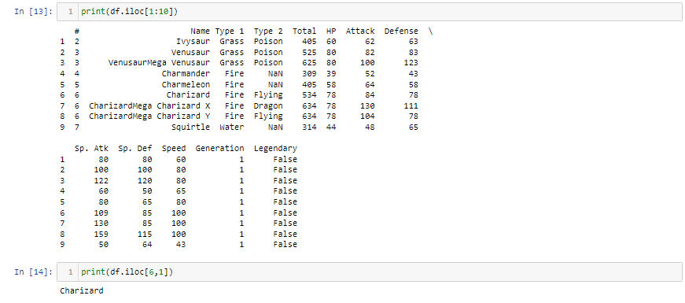
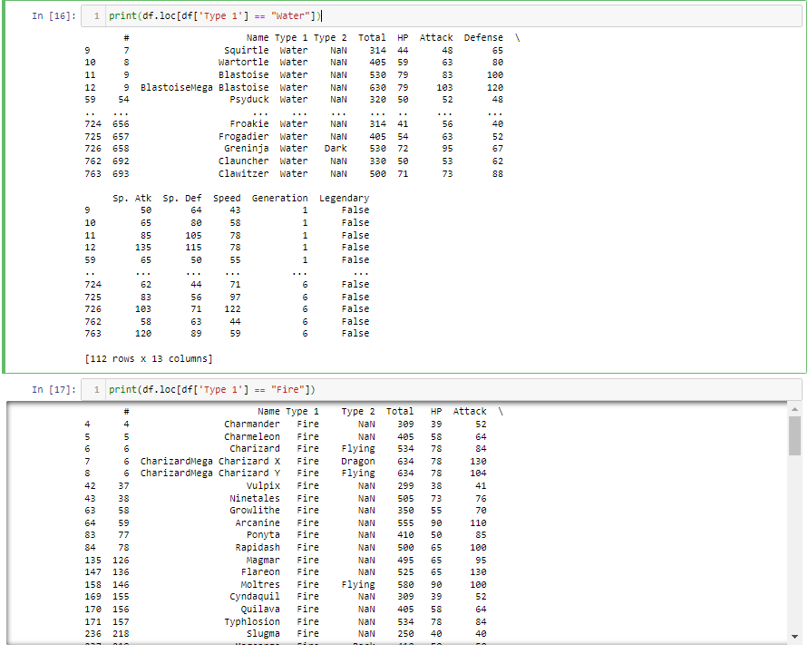
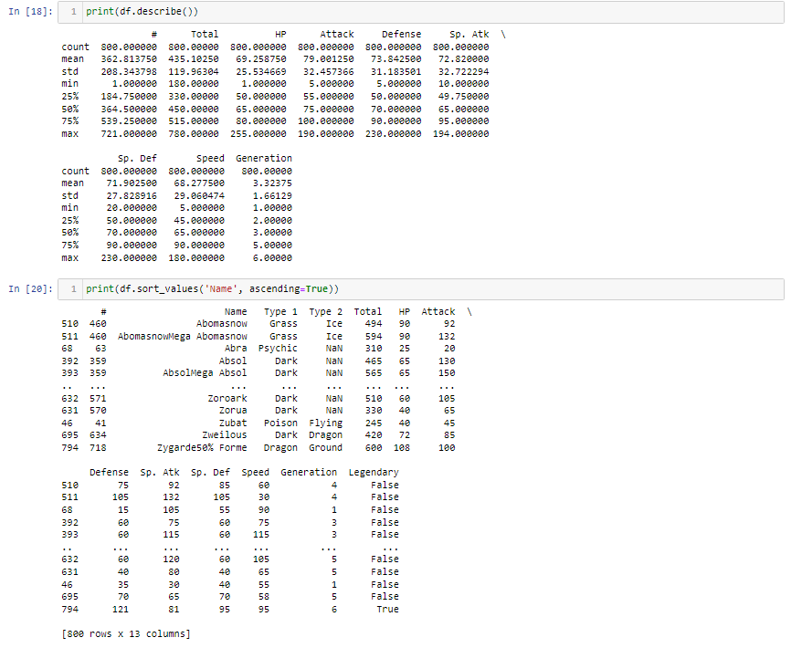

Pokemon dataset
Data analysis through Pandas
Python provides an array of libraries that can either build a website or even build an application, however, for this article the focus will be
using Pandas for data analysis.
The rundown on the components that are fundamental on intrepreting data are:
- Importing the data set
- The basic: the dataset's head and tail
- Reading between the lines - Column extraction
- Locating Rows
- Sort and Describe the Data
- Making changes to the data
- Dropping columns
- Filtering Data
- Changing Data type
- Conditional changes to data
- Group by data
- Save modified data
Pokemon CSV Data
To get started, click the link below to provide the csv data to be uploaded and analyse through Python:Pokemon CSV data link
Importing the dataset and showing the head and tail of the data
Importing the dataset on an interactive computing notebook environment such as Jupyter for python coding allows flexibility to run selected cells.Please view the below image where the dataset has been imported and uploaded to be analysed. As you can see in the image, Pandas allows the function to read the head and tail of the dataset and by changing the numbers in between the brackets can allows how much of the dataset that you want to see and can be as big as the number the dataset has within.

Furthermore, to analyse the data in-depth, a method that is considered a top-down approach is to look at the columns and separate the columns to your liking. The below image illustrates on how to pick the columns you find as high value for the analysis.

As the above shows that the dataframe can be separated with the chosen selected column as requested by changing the column selection. As you further want to analyse your data in greater detail, you start selecting the rows that might interest you. The code below is an example that will locate the row that you are interested in and select what row you find of importance.

To further your data analysis in locating what type of information that you might find valuable, you can use the below code where it looks within a column and finds the data name you have wanted to select, I have chosen three examples such as Fire and Water as the elements I would like to look at as a Type 1. 
The below image shows the function describe which provides statistics and also the sort function that allows to organise the data as to your liking. 